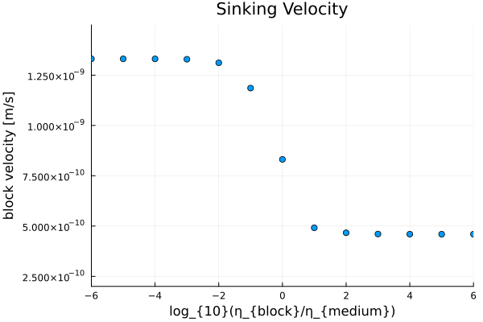

GeoModBox.jl
The Geodynamic Modelling ToolBox is a julia package mainly used for teaching purposes. The package provides different finite difference, staggered, discretization schemes to numerically solve the governing equations for a two-dimensional geodynamic problem. The governing equations are the conservation equations of
The GeoModBox.jl includes a series of exercises and examples of different geodynamically well defined problems. The exercises are given as Jupyter notebooks for the students to complete. The theoretical background is mainly given here in the documentation.
Staggered Finite Difference
Energy Conservation Equation
In geodynamics, the energy is described by the temperature and needs to be conserved within a closed system. Here, we solve the temperature conservation equation, or temperature equation, using an operator splitting method, that is, we first solve the advective part of the temperature equation, followed by the diffusive part.
Heat Diffusion Equation
The GeoModBox.jl provides different finite difference (FD) schemes (e.g., forward and backward Euler, Crank-Nicholson approach, ADI) to solve the diffusive part of the time-dependent or steady-state temperature equation including radioactive heating, in 1-D and 2-D. The solvers are located in src/HeatEquation. So far, only Dirichlet and Neumann thermal boundary conditions are available. Currently, most of the functions assume constant thermal parameters (except for the 1-D solvers).
The examples of solving the heat diffusion equation include, amongst others:
- the determination of an oceanic and continental 1-D geotherm profile,
- a comparison of the different FD-schemes applied on a 1-D gaussian temperature anomaly,
- a 2-D resolution test for each FD-scheme using a gaussian temperature anomaly, and
- a resolution test for a 2-D poisson problem.
For more examples see the example folder.
The exercises include solving
- the 1-D diffusion equation using the forward and backward Euler methods,
- a 2-D poisson problem, and
- a time-dependent temperature distribution within the lithosphere assuming a plume or sill.
Heat Advection Equation
To solve the advective part of the temperature equation, the GeoModBox.jl provides the following different methods:
- an upwind scheme,
- the staggered -leaped frog scheme,
- a semi-lagrangian advection, and
- passive tracers/markers.
The solvers for a the tracer advection method are located in src/Tracers, where the remaining advection routines are located in src/AdvectionEquation. The routines are structured in such a way, that any property, as long as the property is defined on the centroids including ghost nodes on all boundaries, can be advected with the first three advection methods listed above. Using passive tracers, one can, so far, choose to either advect the temperature or phases. In case of advecting phases, one can define a certain rheology ($\eta$) or density ($\rho$) associated to each phase. The phase ID is used to interpolate the corresponding property from the tracers to the centroids.
A key aspect for the advection equation is the conservation of the amplitude and the shape of an anomaly. Depending on the method, numerical diffusion or interpolation effects lead to strong deviations of the initial anomaly. For more details see here. The GeoModBox.jl contains several routines to setup a certain initial anomaly, either for properties defined on their correspondig grid (i.e., temperature, velocity, or phase) or for tracers advecting (so far) a certain temperature or phase. Within the examples and the exercise one can choose different initial temperature and velocity conditions.
The examples for a two dimensional advection problem include:
- a 2-D advection, assuming a constant velocity field (e.g., a rigid body rotation), and
- a resolution test of the same advection example.
The exercises include a:
- 1-D advection of a gaussian or block anomaly, and
- a 2-D advection coupled with the solution of the diffusion equation.
Momentum Conservation Equation
Code Structure
Initial Conditions
Scaling
Benchmarks and Examples
Gaussian Temperature Diffusion
Figure 1. Gaussian Diffusion. Time-dependent, diffusive solution of a 2-D Gaussian temperature anomaly using the Crank-Nicholson approach in comparison to its analytical solution. Top Left: 2-D temperature field of the numerical solution and isotherms lines of the numerical (solid black) and analytical (dashed yellow) solution. Top Right: Total deviation to the analytical solution. Bottom Left: 1-D y-profile along x=0. Bottom Right: Root Mean Square total devation of the temperature over time.

Figure 2. Resolution test. Maximum RMS $\varepsilon$, maximum, and mean temperature for each FD-scheme and multiple resolutions.
Rigid-Body-Rotation


Figure 3. Rigid-Body-Rotation. Time-dependent solution of a rotating circular temperature anomaly using the upwind (first), semi-lagrangian (second), and tracer (third) method. Within a circular area of our model domain the velocity is set to the velocity of a rigid rotation and outside euqal to zero. The temperature is scaled by the maximum temperature of the anomaly.
Falling Block

Figure 4. Isoviscous Falling Block. Time-dependent solution of an isoviscous falling block example. The problem is solved with a solver for variable viscosities. The tracers advect the phase ID, which is used to interpolate the density and viscosity on the centroids and vertices, respectively.

Figure 5. Falling Block Sinking Velocity. Sinking velocity of the block with respect to the viscosity ratio $\eta_r$ at the initial condition.

Figure 6. Falling Block Benchmark. Final tracers distribution for specific cases with $\eta_r \ge 0$.